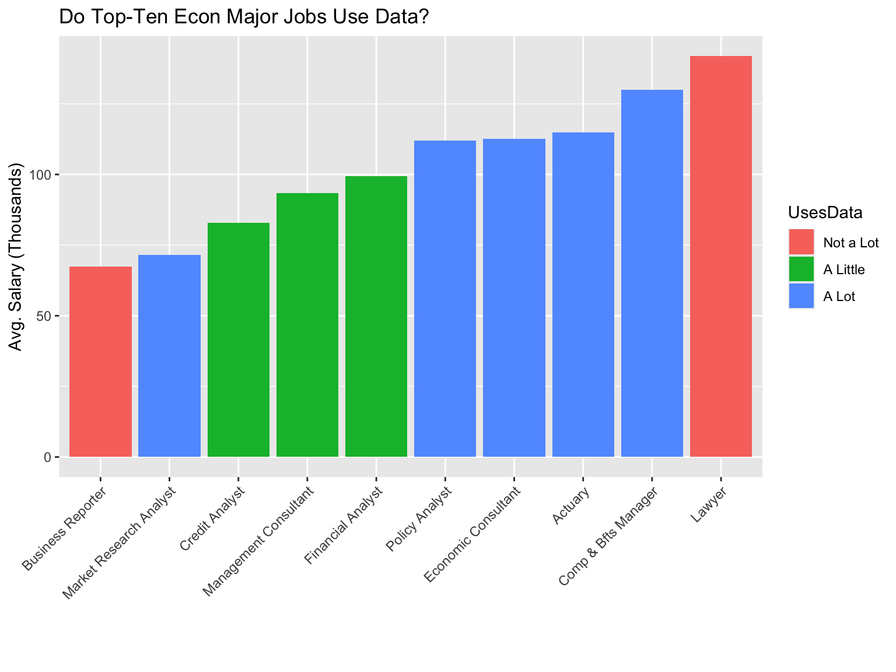
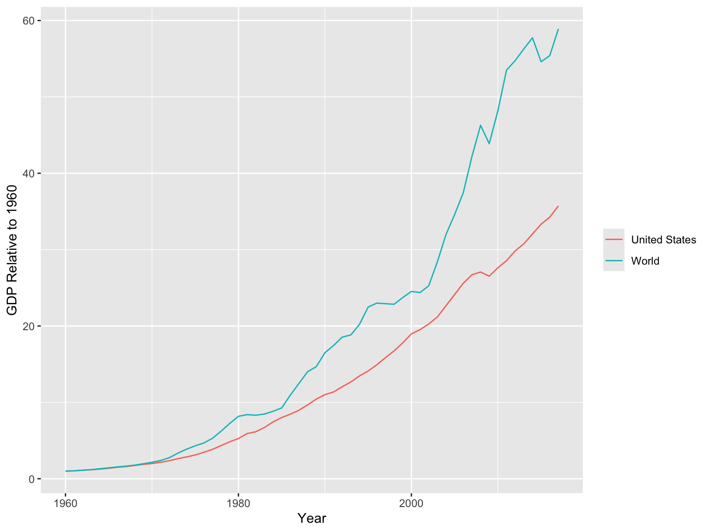
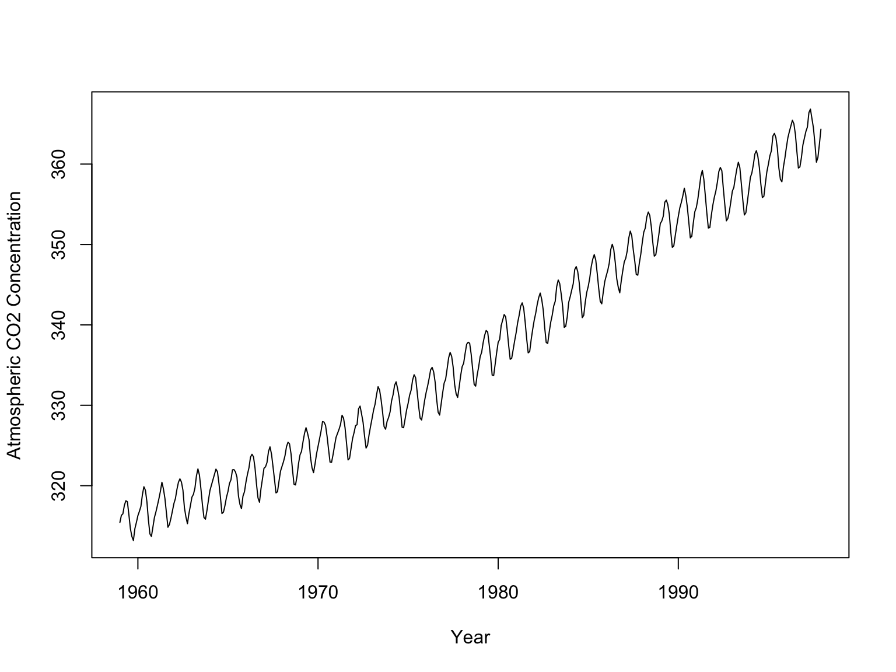

Lecture 1: World of Data
A World of Data
It’s cliche to say that the world focuses more on data than ever
before, but that’s just because it’s true
Even moreso than understanding statistics and probability,
in order to understand the world around us we need to understand
data, how data is used, and what it means
Google and Facebook, among many others, have reams and reams of data
on you and everybody else. What do they do with it? Why?
Understanding the World
Increasingly, understanding the world is going to require the ability
to understand data
And learning things about the world is going to require the ability
to manipulate data
Top Jobs for Economics Majors
Data from The Balance Careers

We Use Data to Understand the Economy

We Use Data to Understand Business

Data from SkyHighNetworks
We Use Data to Understand Politics

Data from FiveThirtyEight
We Use Data to Understand the World

This Class
In this class, we’ll be accomplishing a few goals.
- Learning how to use the statistical programming language R
- Learning how to understand the data we see in the world
- Learning how to figure out what data actually tells us
- Learning about causal inference - the economist’s
comparative advantage!
Why Programming?
Why do we have to learn to code? Why not just use Excel?
- Excel is great at being a spreadsheet. You should learn it. It’s a
pretty bad data analysis tool though
- Learning a programming language is a very important skill
- R is free, very flexible (heck, I wrote these slides in R), is
growing in popularity, will be used in other econometrics courses, and
easy to jump to something like Python if need be
Don’t Be Scared
- Programming isn’t all that hard
- You’re just telling the computer what to do
- The computer will do exactly as you say
- Just imagine it’s like your bratty little sibling who would do what
you said, literally
Plus
- As mentioned, once you know one language it’s much easier to learn
others
- There will be plenty of resources and cheat sheets to help you
- Ever get curious and have a question? Now you can just answer
it. How cool is that?
Causal Inference?
What is causal inference?
- It’s easy to get data to tell us what happened, but not
why. “Correlation does not equal casuation”
- Economists have been looking at causation for longer than most other
fields. We’re good at it!
- Causal inference is often necessary to link data to models
and actually learn how the world works
- We’ll be taking a special approach to causal inference, one that
lets us avoid complex mathematical models
Lucky You!
This is a pretty unusual course. We’re lucky enough to be able to
start the econometrics sequence off this way.
In most places, you have to learn programming while learning
advanced methods, and similarly for causal inference!
Here we have time to build these important skills and intuitions
before sending you into the more mathematical world of other
econometrics courses
Structure of the Course
- Programming and working with data
- Causal Inference and learning from data
- Onto the next course!
Admin
- Syllabus
- Homework (due Sundays, including this coming Sunday)
- Short writing projects
- Attendance
- Midterms
- Final
- Extra Credit
An Example
- Let’s look at a real-world application of data to an important
economic problem
- To look for: What data are they using?
- How do they tell a story with it?
- What can we learn from numbers alone?
- How do they interpret the data? Can we trust it?
- Economic
Lives of the Middle Class